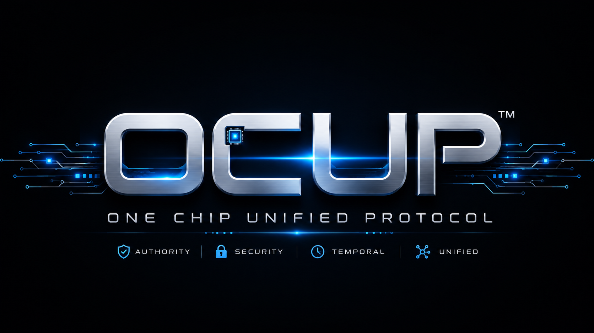

AEGES Open Core
Governed value protection, bounded quarantine, evidence, and restoration.
Synthetic concept demonstration. This page does not monitor networks, detect real theft, freeze assets, contact regulators, activate hardware, or recover funds.
The governing rule
A system placed into quarantine must not be able to release itself.
AEGES is an application layer aligned with OCUP Temporal Authority Governance. Risk detection and release authority remain separate.
Intended flow
1. Risk signal
2. Governed decision
3. Bounded hold + evidence
4. Fresh external release authority
What the public code does
- Runs a local Node/Express demonstration API.
- Validates synthetic transaction fields.
- Uses mock output or optional user-supplied model-provider adapters.
- Returns analytical text and application-local metrics.
It does not provide asset custody, validated fraud detection, blockchain enforcement, independent validator quorum, production PQC, or an OCUP hardware gate.
Run locally
npm cinpm start
Then inspect GET /api/health, GET /api/demo, and the bounded examples in DEMO.md.